0条评论
 登录/注册住墅，发表你的评论
登录/注册住墅，发表你的评论
阅读数：152019年08月13日 10:12
每一年《向往的生活》开播，新、老粉丝翘首以盼，网络话题关注度高。不像常规的慢综艺，找几个当红流量、卖卖情怀、拍个几天，博取热点。《向往的生活》能够真正的让嘉宾驻扎在某地一段时间。
从第一季的北京密云，第二季到杭州桐庐，第三季的湘西土家族苗族自治州古丈县默戎镇翁草村，整个摄制组在乡野间劳作、做饭、睡觉、聊天，一切都围绕着日子。隔着屏幕的观众，无不羡慕蘑菇屋里——悠闲快乐的乡野生活
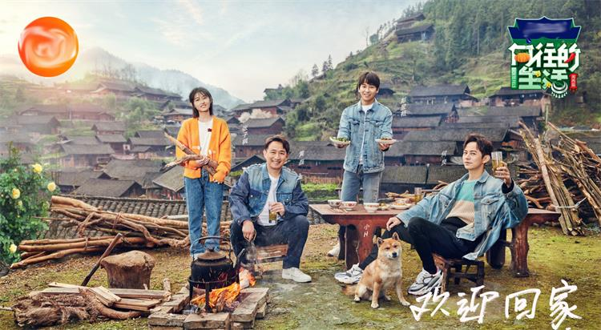从小在小镇长大的我，对于乡野有一种天生的亲近，双脚在大地上，沾满泥土的芬芳。家门前是大山，四周全是一望无垠的田野。
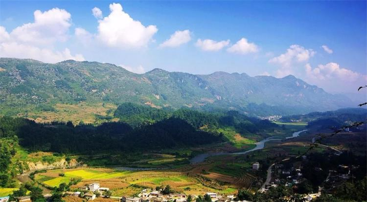那时的夏天，没有空调、冰淇淋、和汽水相伴。我最快乐的时光都在山野。几场小雨一过，空气里满是泥土的气息，气温一日日升高，周围的植被长得葱葱郁郁。
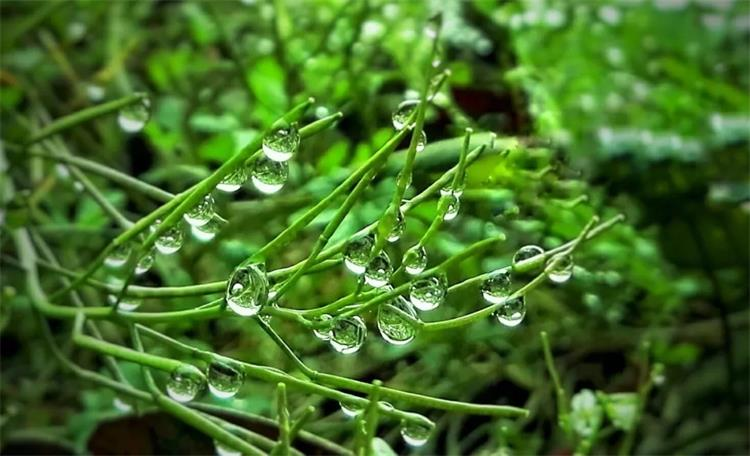是时候出发，去田野间、去山林里、去小溪边、去果园中，拥抱明丽山水，倾听万物之声，品尝自然馈赠，体验野奢之趣。只有彻底的逃离城市森林，才能够解放身心，调动五感，捕捉每一种色彩，记住每一帧完整的画面，自己亲手采摘的食材，做出来的美味，令人欢欣、激动。
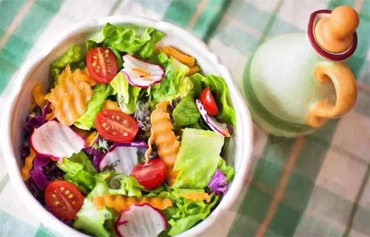每年的九月到十一月，众多的可食用野生菌是人人都爱的山珍。
菌子属于真菌，它的孢子会像蒲公英一样，随风飞扬去很远的地方，地下的菌丝网络只要找到机会，还会不停地生长。大多数菌子，诸如牛肝菌、青头菌、干巴菌、鸡油菌等等，一般都生长在松树林、栗树林或混合树林间。它们生长的环境有落叶、有苔藓、有杂草。
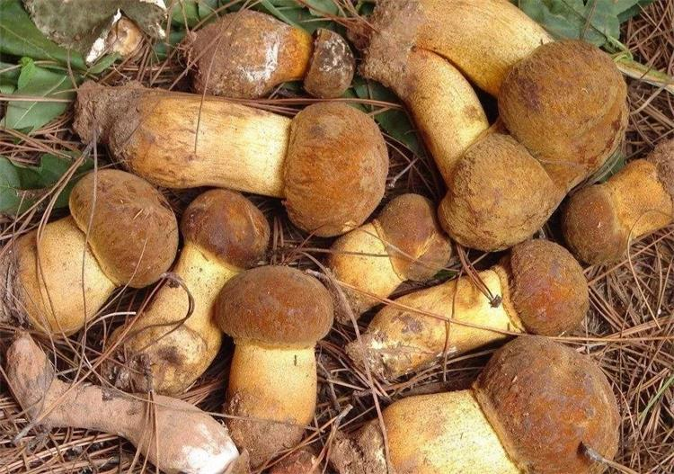一般捡菌子的专业人士，起的很早，而且熟悉往年常去的菌窝。若想要像他们一样找到宝贝，单靠眼睛是不够的。还需要敏锐的感觉和嗅觉。我们一路上闻着腐殖土的味道，脚下踏着湿湿嗒嗒的泥巴路，蹑手蹑脚，生怕踩坏了或是错过了某一丛菌子。找到菌子后，通常情况不宜长途奔波，而是就近找个能处理菌子的小餐馆，吃一顿还带着山野气的菌子宴。
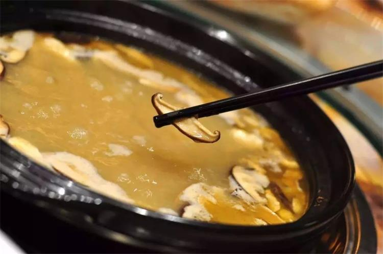菌子用清水洗净，手工撕小，或与辣椒、青椒、火腿同炒，或烧个浓郁的菌汤，前者鲜嫩脆爽，后者口感厚重。现而今，若不参与拾菌的活动，总觉得少了点什么，至少，那独一份的“鲜”，恐怕是错过了。
除了捡菌子，野外采摘也是一大乐趣。约着三五好友或是一大家子，带着藤编的小篮子，去采摘一大筐的水果，途中有说有笑。没经过大棚栽培的蔬果，有一种自然的纯粹之味。
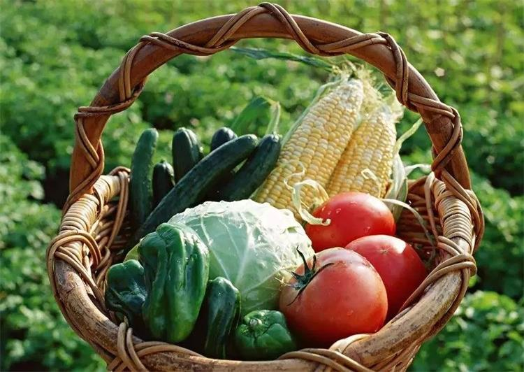那时，我和伙伴会爬上高高的樱桃树，摘下那枝头红润透亮的樱桃，根本等不及清洗，就站在林间，一捧一捧送入嘴巴，丰盈的汁液灌满口腔，酸酸甜甜的味道，就是青春呀！
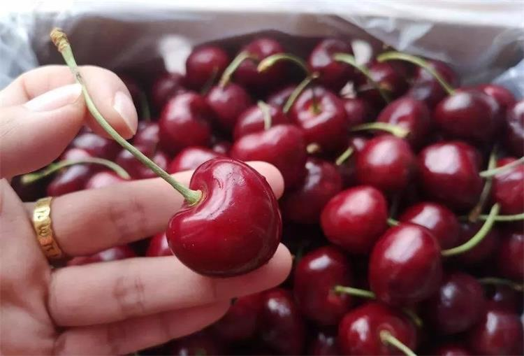我们也独爱野桑葚，深紫色的浆果一串串的挂在枝头，采摘的时候一定要小心翼翼，不然很可能就会不小心碰破了皮，衣服沾染上难洗的汁水。
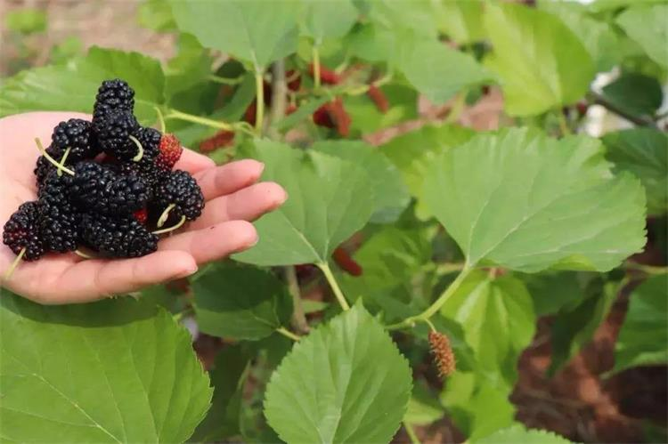要是碰到瓜田，我们学着瓜农有模有样地轻拍西瓜，当听到脆响的声音，就会毫不犹豫买走。西瓜是不适宜当场就吃的，最好找个小溪或是打一大盆天井水，让西瓜、番茄、黄瓜、苹果等其他的果蔬一块浸泡在期间，过了一个小时，将其捞起，用锋利的小刀开个口子，掰成几大块，一群人整整齐齐，或站或蹲，大口吮吸着甜丝丝的西瓜汁，完全不顾及任何形象，除了流了一手的果汁，还有一股凉意，直接流入心坎，消除高温闷热。
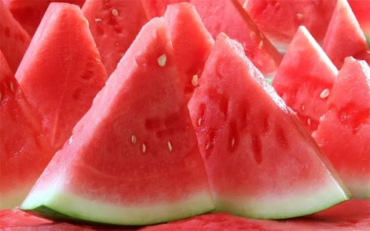到了晚上，我和家人会找个乡间的民宿住个一宿。白日里采摘的蔬果，今夜就是餐桌上的纯天然美食。农家土鸡蛋翻炒清脆的黄瓜、乡村土猪腊肉当然和小青椒最配、小火烘焙的手撕茄子凉拌最受欢迎、不加油盐的青菜去热下火、乳白色的野生鱼汤喝不出泥土味……
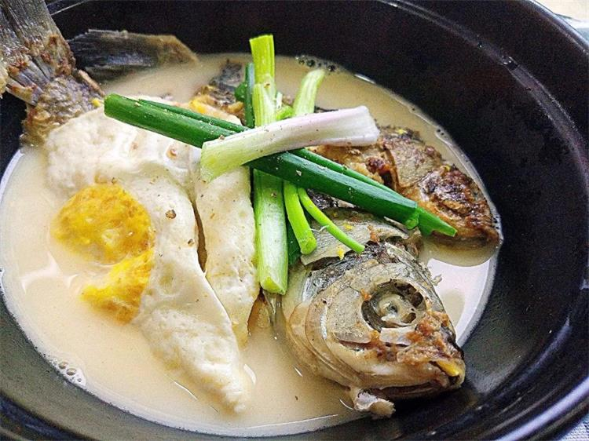心满意足地享用完自己一日的战利果实，若此时还能喝上一碗冰糖熬制的杨梅汤，既可解暑，又能消食。四季轮回，万物生长有序，在合适的时间，吃应季的食材，过不紧不慢的日子，是每个人，都向往的生活。
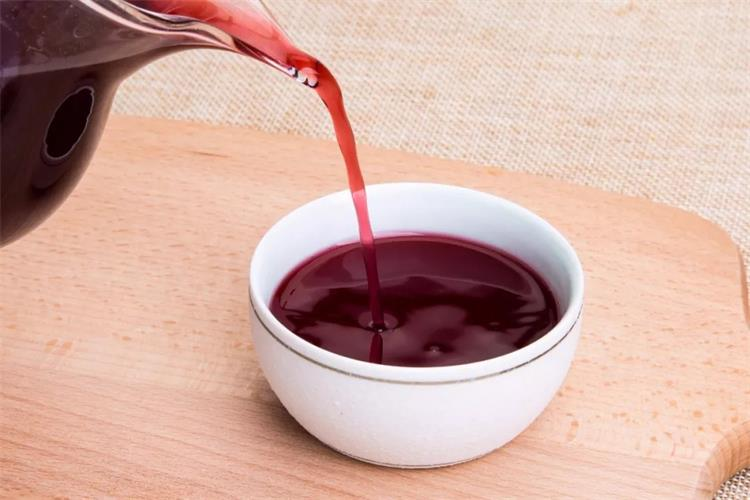如果偶尔，生活累了，不如给自己点时间，去乡间野一回！
立秋一过，暑气渐收。小院的枝头挂满了黄橙橙的大柿子，丰收的果盘里塞满了大枣与干果。是时候，约上老朋友，揣着一颗简单的心去儿时的家乡小院歇歇脚。
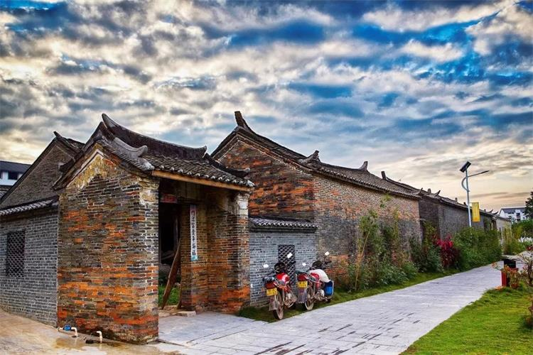可以去老北京的小院里，采摘苹果、葡萄、红莓、黄金梨，慢品一回秋日硕果的酣甜。
点击图片即可预定
可以去西安的小院里，采摘红似玛瑙，白若水晶的大石榴，慢品一回唐人的朝贡佳品。
点击图片即可预定
可以去杭州的小院里，用春季晒干的老笋，慢炖一锅腌笃鲜。
点击图片即可预定
可以去青岛的小院里，秋风一吹蟹脚痒，慢用黄酒配大闸蟹。
点击图片即可预定
可以去云南的小院里，拾起一地金黄的银杏，慢品一锅银杏炖白果。
0条评论
登录/注册住墅，发表你的评论